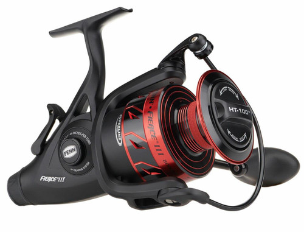

ReelCalc Reel Setup Guide
PENN Fierce III Live Liner 8000LL Line Capacity & Reel Setup Guide
For heavier saltwater shore and boat bait fishing, the PENN Fierce III Live Liner 8000LL pairs 5.3:1 gearing with a listed 44-inch retrieve per turn at full spool. The adjustable Live Liner setting allows line to run under a separate drag; turning the handle disengages that setting and returns control to the HT-100 front drag. Choose your exact line in the preloaded calculator below to estimate a full spool or optional backing beneath a shorter working length.